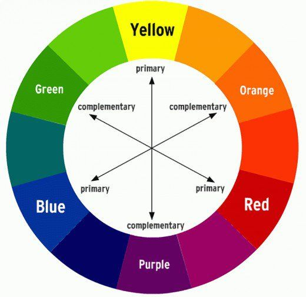
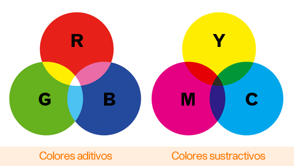

Veo, veo. ¿Qué color ves?
Tan solo hay que pensar que un usuario tarda una media de 90 segundos en hacer un juicio
subconsciente sobre un producto y la mayoría de las veces, esa evaluación se realiza solo en
función del color. Esto significa que tan solo cambiando el tono o la saturación de un objeto
podemos cambiar el estado de ánimo y el comportamiento del usuario. Sin embargo, la selección
de colores es compleja.
En cuanto a la parte más técnica sobre la teoría del color, para explorar más a fondo este tema,
hemos elaborado una guía básica que analiza los principales puntos a tener en cuenta: la rueda
de color, en qué consisten los modelos de color, la importancia que tiene la armonía, qué son
y para qué sirven los esquemas monocromáticos, los colores opuestos y complementarios, qué es
una triada, un doble complementario y una triada. Y para finalizar, cómo crear una paleta de
color propia.
 La rueda de color es una herramienta
clave. Este círculo cromático muestra diferentes colores ordenados y su relación entre sí.
El círculo de color está construido alrededor de colores primarios, secundarios y terciarios.
Los colores primarios son aquellos que no se pueden obtener mediante la mezcla de ningún otro
color, mientras que los colores secundarios y terciarios se crean combinando los colores
primarios y secundarios respectivamente.
Esta forma esquemática de representar los colores fue desarrollada por Issac Newton y desde
entonces ha sufrido muchas transformaciones. La rueda de color sigue siendo una de las mejores
maneras de representar la teoría del color y ver diferentes combinaciones de colores.
Hay dos tipos de modelos de color: aditivos y sustractivos. El modelo de color aditivo se utiliza para pantallas digitales, mientras que el modelo de color sustractivo se basa en colores tangibles como pintura, tintes y tinta. El sistema RGB del modelo de color aditivo se basa en los colores primarios del espectro y puede combinar diferentes colores para crear un amplio espectro de colores. Por otro lado, en la teoría del color el modelo sustractivo es limitado. Es mejor convertir sus archivos al formato CMYK para garantizar la consistencia de los colores antes de imprimir su diseño final.